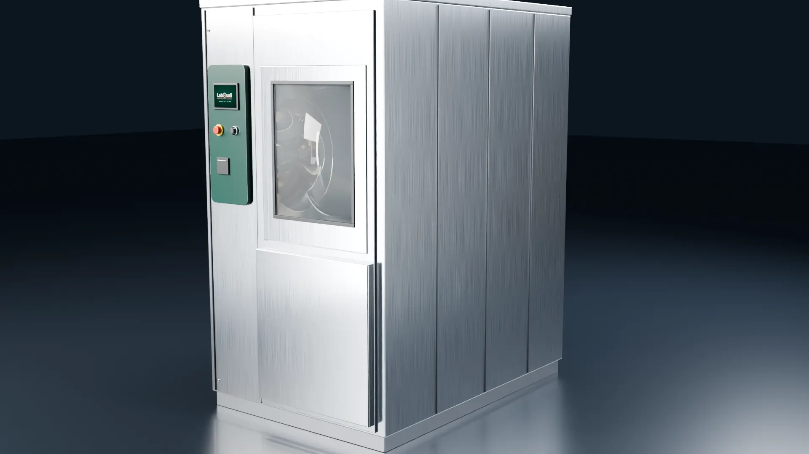
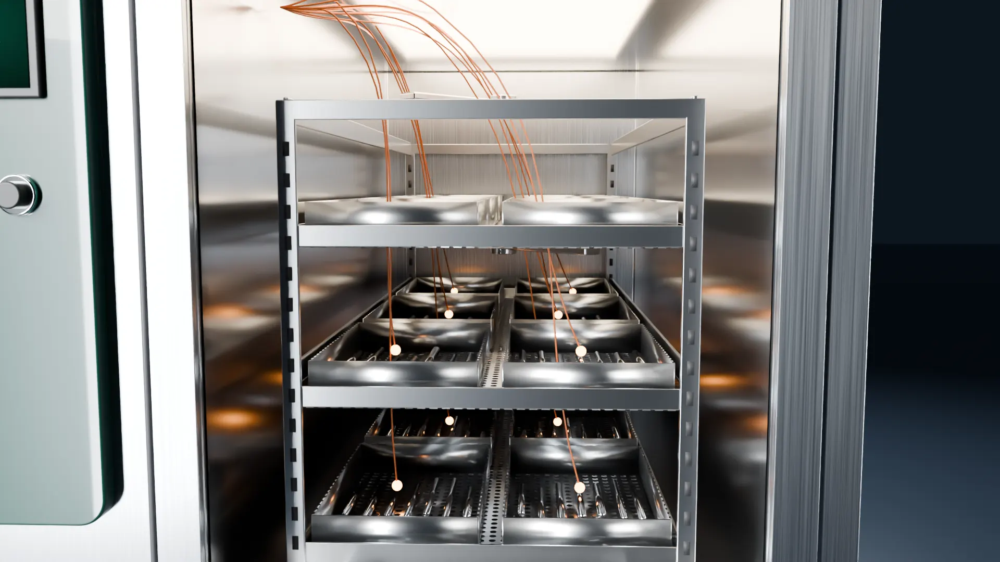

A instalação atende à especificação?
- Utilidades: água, energia, vapor, ar, drenagemconforme
- Qualidade da água de enxágue finalconforme
- Instrumentação de controle calibradaconforme

Perfil de temperatura de todas as fases do ciclo com termopares rastreáveis à RBC, A0 calculado por sensor e relatório conforme ABNT NBR ISO 15883 e RDC 15/2012.
Pedir cotaçãoEle não mostra se todos os cestos chegaram à temperatura de desinfecção, nem se ficaram na faixa especificada durante todo o tempo de manutenção. Só termopares distribuídos pelos níveis do rack mostram isso.
Role para rodar o ciclo: pré-lavagem, lavagem, enxágue, desinfecção térmica e o A0 de cada sensor.
Os termopares são presos às superfícies da carga de referência, nos pontos mais difíceis de aquecer: cesto inferior, cantos do rack, perto da porta e longe dos braços de aspersão. Um deles fica junto ao sensor de controle da lavadora, para comparar a leitura do equipamento com a medição independente.
O A0 é o tempo equivalente, em segundos, a 80 °C (z = 10 °C), somado a partir de 65 °C. A ISO 15883 pede que a carga fique na faixa de desinfecção (temperatura ajustada a +5 °C) durante todo o tempo de manutenção. O critério vale para o A0 mínimo, ou seja, para o sensor mais frio: 3000 s para instrumentos críticos e semicríticos.

O ciclo que você rodou é um ensaio de QD. Antes dele, a QI confirma instalação e utilidades, e a QO comprova o desempenho da câmara vazia. Os critérios de aceitação ficam definidos no protocolo antes do ensaio. No final, você recebe um relatório completo, assinado pelo responsável técnico, comprovando que o equipamento atende aos critérios preestabelecidos.
Informe tipo e quantidade de equipamentos. Respondemos com escopo (QI, QO, QD ou requalificação periódica), número de ciclos de ensaio, prazo e normas aplicáveis.